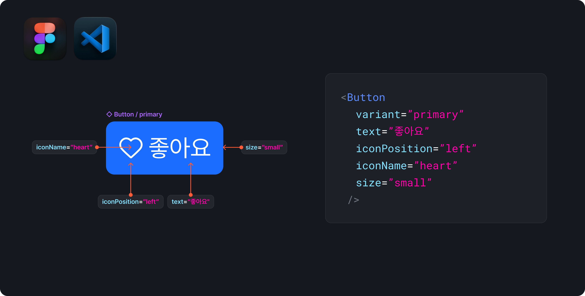
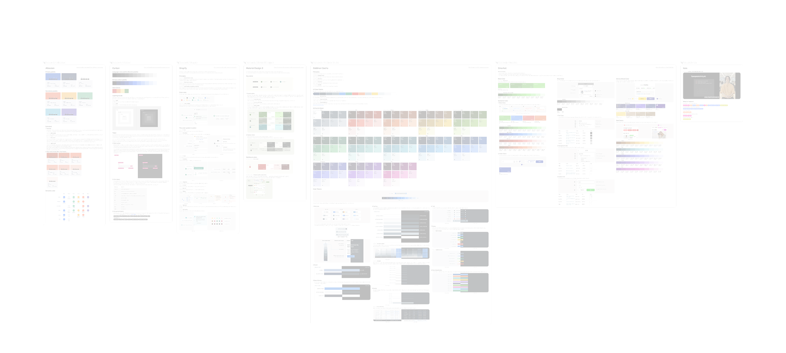
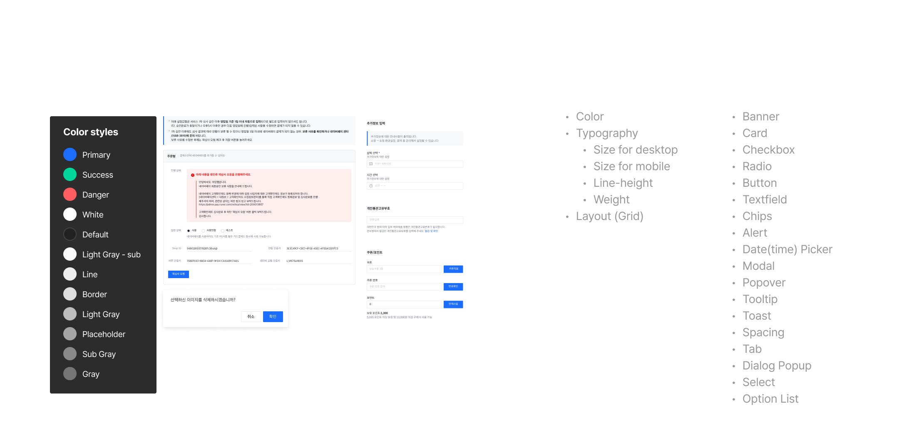
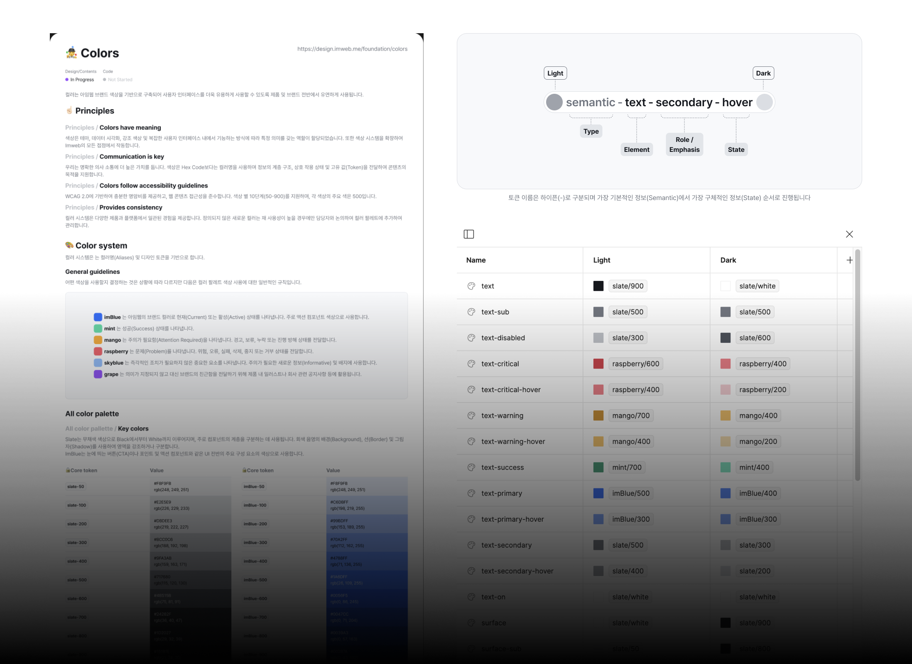
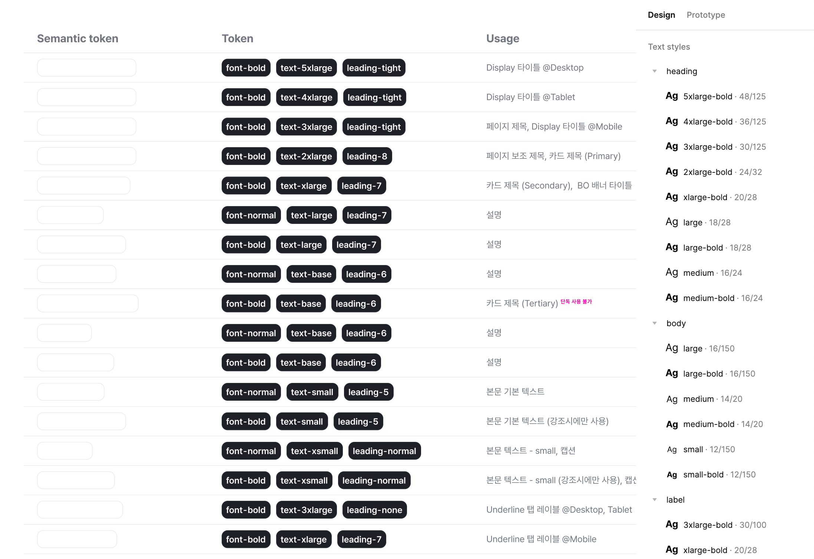
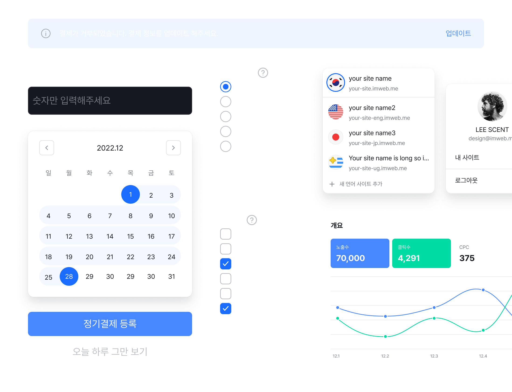
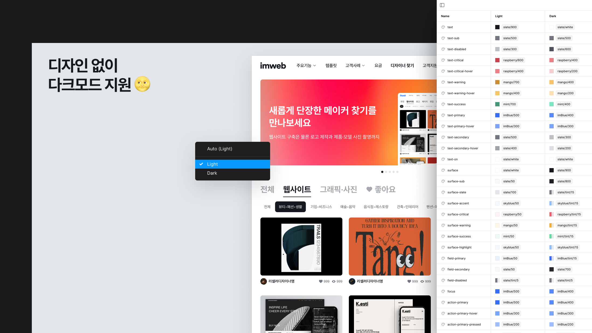
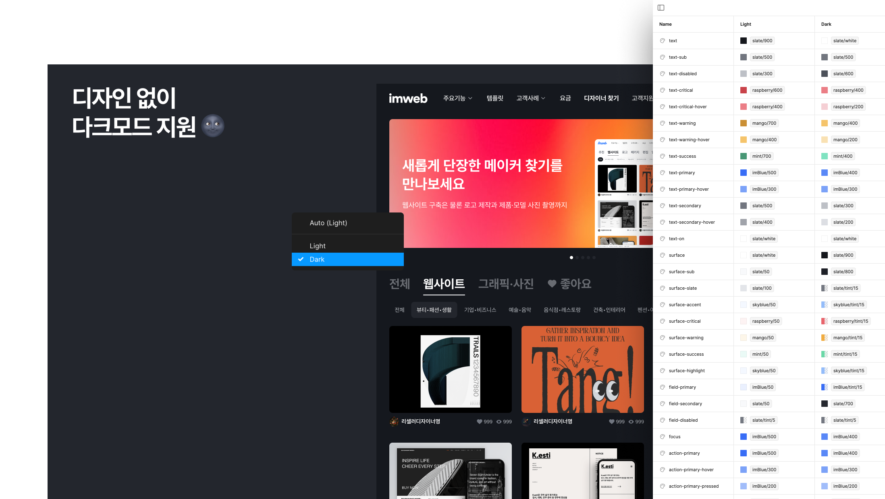
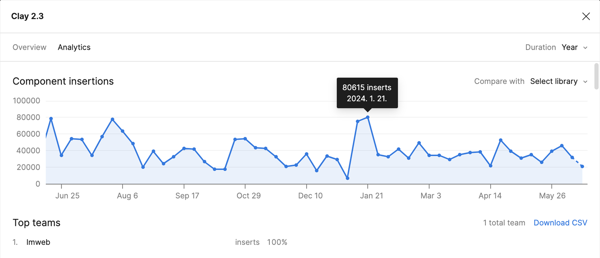

Overview 개요
디자인 시스템 Clay는 다양한 디지털 제품과 서비스에서 일관된 사용자 경험을 제공하고, 개발과 디자인 사이의 작업 효율을 높이기 위해 개발되었습니다. Clay는 imweb 제품 전반의 요구 사항을 충족하는 데 필요한 모든 것을 제공합니다. 높은 유연성과 확장성으로 새로운 프로젝트나 제품이 추가 되더라도 일관된 사용자 경험을 제공합니다.
Collaborators 협업
Front-end engineer(1)
Goals 목표
Design Process 디자인 프로세스
분석 및
리서치
디자인 원칙
정의
Foundation
만들기
디자인 토큰
도입
디자인
라이브러리
개발
배포
Research 연구
기존 디자인 파일에서 중복된 에셋과 일관성 없는 요소를 분류해 필요한 구성요소를 식별합니다. Google Material, HIC, Carbon, Polaris, Gestalt 등 성공적인 글로벌 디자인 시스템에서 벤치마킹할 수 있는 요소와 모범 사례를 분석해 이를 프로젝트에 반영할 수 있도록 했습니다.


Design Results
디자인 시스템에서 가장 기초가 되는 컬러 팔레트를 개발했습니다. 일관된 시각적 아이덴티티를 위해 컬러 시스템은 컬러명(Aliases) 및 디자인 토큰을 기반으로 합니다. 다양한 디자인 요소에 의미론적으로 할당된 시멘틱 컬러 토큰은 통일된 디자인 언어로 디자이너와 엔지니어의 원활한 협업 환경이 만들어지고, 커뮤니케이션 비용이 크게 줄었습니다.

Design Results
다양한 상황에 맞는 텍스트 스타일을 구분하고 사용법을 정의했습니다. 텍스트의 일관성과 가독성을 위해 각 Heading, Body, Label에는 적당한 Scale, Weight, Leading을 포함하고 있습니다.

Design Results
Clay는 다양한 환경에서 일관되게 작동할 수 있는 유연한 디자인 시스템으로 제품 전반에서 범용적으로 사용할 수 있는 32개의 컴포넌트를 제공합니다. 모든 컴포넌트는 확장 가능한 구조로 설계되어 새로운 기능이나 요구사항을 빠르게 대응할 수 있습니다.

Design Results
추가 디자인 작업 없이 빠르게 테마를 전환할 수 있습니다. 이미 정의된 디자인 토큰으로 디자인과 개발 과정에서 시간을 절약하고 생산성을 높였습니다.


Testing and
Integration 테스트와 제품 통합
DS 스쿼드는 전담 QA가 없기 때문에 디자인 시스템의 품질 관리는 내부에서 적극적으로 이루어집니다. 1차로 검증된 디자인 시스템을 제품에 통합시키고, 2차로 메이커와 스쿼드로 부터 피드백을 수집하여 필요한 경우 컴포넌트를 개선합니다. 이러한 유연한 접근 방식은 디자인 시스템의 개발 비용을 줄이고, 메이커의 요구 사항에 맞춰 높은 품질의 디자인 시스템을 만들고 유지하고 있습니다.
Results and
Achievements 결과 및 성과
디자인 시스템으로 프로덕트 조직의 생산성이 눈에 띄게 향상되었습니다. 시스템의 일관된 구성 요소와 통일된 디자인 언어는 개발 비용이 절감으로 이어져 메이커가 제품에 집중할 수 있게 되면서 시간과 리소스를 크게 절약할 수 있게 되었습니다.
Used by
100%
Total components
811
Total styles
53
Activity this week
18.3k inserts

Positive User Feedback
Feedback for improvement